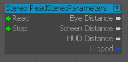
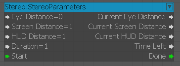

ReadStereoParameters
Используется для чтения параметров стереодисплея HUD.

Входы
| Порт | Тип | Описание |
|---|---|---|
| Читать | Любой | Начните читать стереозначения |
| Стоп | Любой | Хватит читать стереозначения |
Выходы
| Порт | Тип | Описание |
|---|---|---|
| EyeDistance | Плавать | Выводит расстояние до глаз |
| ScreenDistance | Плавать | Расстояние до экрана выходов |
| HUDРасстояние | Плавать | Выводит расстояние HUD |
| Перевернутый | логическое значение | Вывод, если стерео перевернуто |
StereoParameters
Используется для вывода параметров стереоизображения HUD.

Входы
| Порт | Тип | Описание |
|---|---|---|
| EyeDistance | Плавать | Устанавливает стерео расстояние до глаз |
| ScreenDistance | Плавать | Устанавливает расстояние стереоэкрана |
| HUDРасстояние | Плавать | Устанавливает стерео расстояние HUD. |
| Продолжительность | Плавать | Продолжительность интерполяции в секундах |
| Старт | Любой | Запускает интерполяцию |
Выходы
| Порт | Тип | Описание |
|---|---|---|
| CurrentEyeDistance | Плавать | Выводит текущее расстояние до глаз |
| CurrentScreenDistance | Плавать | Выводит текущее расстояние до экрана |
| CurrentHUDDistance | Плавать | Выводит текущее расстояние HUD. |
| TimeLeft | Плавать | Время, оставшееся до конца интерполяции |
| Готово | Любой | Выводы после завершения интерполяции |